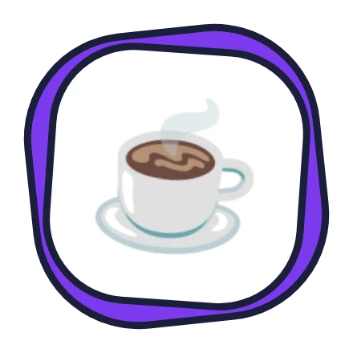

숨 고르기의 해
멈춰 서서 나를 돌본 한 해
이 유형이 나온 정도
-
낮게 나왔다면 올해가 여러 이름을 가진 해였다는 뜻이에요
올해의 당신은 더 달리는 대신 속도를 늦췄어요. 무리하던 것을 내려놓고, 몸과 마음을 살피는 데 시간을 썼죠. 겉으로 보이는 성과는 적을 수 있어도 다음 해를 위한 힘을 채운 해였어요. 쉬는 동안 죄책감이 들었다면 그건 그동안 너무 열심히 살았다는 뜻이에요.
올해 이런 모습이었어요
- "안 한다"고 정한 일이 몇 가지 있음
- 잠, 병원, 운동처럼 나를 돌보는 데 시간을 씀
- 남들과 비교하면 조급했지만 몸은 편해졌음
📖 이 결과에 대해 조금 더
쉰 해는 빈 해가 아니에요
밭도 한 해 쉬어야 다음 해에 잘 자라요. 올해 내려놓은 일을 떠올려 보세요. 무엇을 안 하기로 했는지가 올해의 가장 큰 결정이었을 수 있어요. 그 결정 덕분에 지금의 내가 덜 지쳐 있어요.
내년에 가져갈 것 하나
내년에 다시 속도를 낼 때도 올해 익힌 쉬는 방법 하나는 꼭 가져가세요. 일찍 자기든, 일요일 비우기든, 그게 다음 번 방전을 막아 줘요.
올해 이런 사람과 잘 맞았어요
⚠️ 이 테스트는 재미로 즐기는 콘텐츠이며 전문적인 심리 진단이 아니에요.